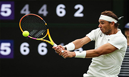
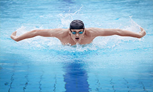

Sepak Bola
sepak bola adalah sebuah cabang olahraga yang menggunakan sebuah bola yang terbuat dari kulit atau karet dan dimainkan oleh dua tim, yang mana masing-masing Tim terdiri dari sebelas pemain dan ada juga beberapa pemain yang berperan sebagai pemain pengganti. Read More

Basket
Bola basket adalah olahraga bola berkelompok yang terdiri atas dua tim beranggotakan masing-masing lima orang yang saling bertanding mencetak poin dengan memasukkan bola ke dalam keranjang lawan. Bola basket dapat di lapangan terbuka, walaupun pertandingan profesional pada umumnya dilakukan di ruang tertutup. Read More

Tenis
Tenis atau bola tampel adalah olahraga yang biasanya dimainkan antara dua pemain atau antara dua pasangan masing-masing dua pemain. Setiap pemain menggunakan raket untuk memukul bola karet. Tujuan permainan adalah memainkan bola dengan cara tertentu sehingga pemain lawan tidak dapat mengembalikan bola tersebut. Read More
Renang
Renang adalah gerakan berpindah tempat secara teratur di air dengan cepat menggunakan tangan dan kaki. Gaya renang yang diperlombakan adalah gaya bebas, gaya kupu-kupu, gaya punggung dan gaya dada. Perenang yang memenangkan lomba renang adalah perenang yang menyelesaikan jarak lintasan tercepat. Read More
